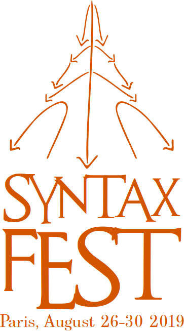

|
SyntaxFest 2019
Paris, August 26-30
Shared review committee
Confirmed committee members:
- Agnieszka Patejuk (Polish Academy of Sciences, Warsaw, Poland, University of Oxford, UK)
- Alain Polguère (Université de Lorraine ATILF CNRS, France)
- Alexander Mehler (Goethe-Universität Frankfurt am Main, Germany)
- Amir Zeldes (Georgetown University, USA)
- Anat Ninio (The Hebrew University, Israel)
- András Imrényi (Eötvös Loránd University, Hungary)
- Ann Bies (University of Pennsylvania, USA)
- Barbora Hladka (Charles University in Prague, Czech Republic)
- Benoit Crabbé (Université Paris Diderot, France)
- Bernd Bohnet (Google, London, UK)
- Carlos Gómez-Rodríguez (Universidade da Coruña, Spain)
- Chunshan Xu (Anhui Jianzhu University, China)
- Cristina Bosco (Università di Torino, Italy)
- Dan Zeman (Charles University in Prague, Czech Republic)
- David Beck (University of Alberta, Canada)
- Djamé Seddah (Sorbonne University, France)
- Eckhard Bick (University of Southern Denmark, Denmark)
- Emily Bender (University of Washington, Seattle, USA)
- Eric de la Clergerie (INRIA, France)
- Eva Hajičová (Charles University in Prague, Czech Republic)
- Filip Ginter (University of Turku, Finland)
- Francis Tyers (Indiana University / Higher School of Economics, USA)
- François Lareau (Université de Montréal, Canada)
- Giulia Venturi (Istituto di Linguistica Computazionale “A. Zampolli” - CNR, France)
- Giuseppe Celano (University of Leipzig, Germany)
- Gosse Bouma (University of Groningen, The Netherlands)
- Haitao Liu (Zhejiang University, China)
- Haruko Sanada (Rissho University, Japan)
- Heike Zinsmeister (University of Hamburg, Germany)
- Henrik Høeg Müller (Copenhagen Business School, Denmark)
- Igor Boguslavsky (Universidad Politecnica de Madrid, Spain / Russian Academy of Sciences, Russia)
- Ines Rehbein (Potsdam University, Germany)
- Jan Hajic (Charles University in Prague, Czech Republic)
- Jan Macutek (Comenius University, Slovakia)
- Jarmila Panevova (Charles University in Prague, Czech Republic)
- Jasmina Milicevic (Dalhousie University, Canada)
- Jennifer Foster (Dublin City University, Ireland)
- Jingyang Jiang (Zhejiang University, China)
- Joakim Nivre (Uppsala University, Sweden)
- John Lee (City University of Hong Kong, Hong Kong)
- Kaja Dobrovoljc (University of Ljubljana, Slovenia)
- Kemal Oflazer (Carnegie Mellon University Qatar, Qatar)
- Kilian Evang (Université of Düsseldorf)
- Kim Gerdes (Sorbonne Nouvelle, Paris)
- Koenraad De Smedt (Bergen University, Norway)
- Koldo Gojenola (University of the Basque Country, Spain)
- Leo Wanner (Universitat Pompeu Fabra, Spain)
- Leonel Figueiredo de Alencar (UFC, Brazil)
- Leonid Iomdin (Russian Academy of Sciences)
- Lilja Øvrelid (University of Oslo, Norway)
- Livy Real (USP, Brazil)
- Lori Levin (Carnegie Mellon University, Pittsburgh, Pennsylvania, USA)
- Marie Candito (Université Paris Diderot, France)
- Marie-Catherine de Marneffe (The Ohio State University, USA)
- Memduh Gökırmak (Instanbul University, Turkey)
- Miguel Ballesteros (IBM Research Watson, Yorktown, USA)
- Miryam de Lhoneux (Uppsala University, Sweden)
- Nicholas Lester (University of Zürich, Switzerland)
- Nicolas Mazziotta (Université de Liège, Belgium)
- Olga Scrivner (University of Indiana, Bloomington, USA)
- Petya Osenova (Bulgarian Academy of Sciences, Sofia, Bulgaria)
- Pierre Nugues (Lund University, Sweden)
- Prokopis Prokopidis (Institute for Language and Speech Processing/Athena RC Greece)
- Ramon Ferrer-i-Cancho (Universitat Politecnica de Catalunya, Catalonia)
- Relja Vulanovic (Kent State University, USA)
- Reut Tsarfaty (Open University of Israel, Israel)
- Richard Futrell (Massachusetts Institute of Technology, USA)
- Richard Hudson (University College London, UK)
- Robert Östling (Stockholm University)
- Rudolf Rosa (Charles University in Prague, Czech Republic)
- Ryan McDonald (Google, UK)
- Sandra Kübler (Indiana University, USA)
- Serge Fleury (Université Sorbonne Nouvelle - Paris 3, France)
- Silvie Cinková (Charles University in Prague, Czech Republic)
- Simon Mille (Pompeu Fabra University, Barcelona)
- Simonetta Montemagni (Istituto di Linguistica Computazionale “A. Zampolli” - CNR, Italy)
- Stephan Oepen (University of Oslo, Norway)
- Sylvain Kahane (Université Paris Nanterre, France)
- Tanja Samardžić (University of Zurich, Switzerland)
- Teresa Lynn (Dublin City University, Ireland)
- Timothy Osborne (Zhejiang University, China)
- Valeria de Paiva (Nuannce, USA)
- Xinying Chen (Xian Jiaotong University, China / University of Ostrava, Czech Republic)
- Zdenka Uresova (Charles University in Prague, Czech Republic)
- Zhao Yiyi (Xiamen University, China)
- Çağrı Çöltekin (Tübingen, Germany)
|